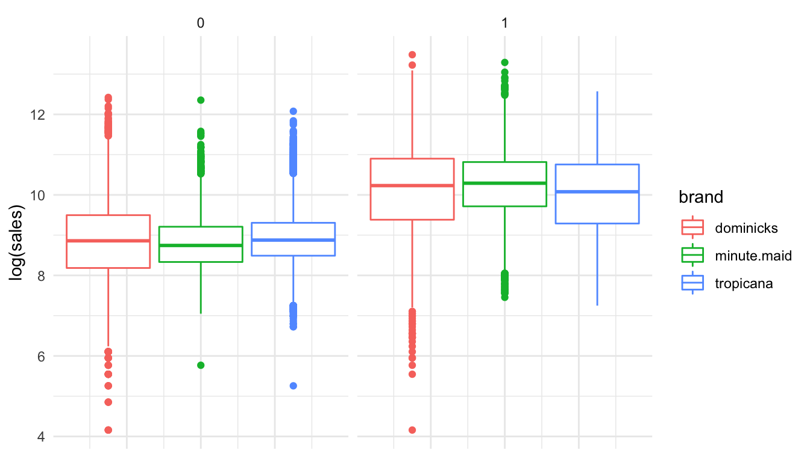
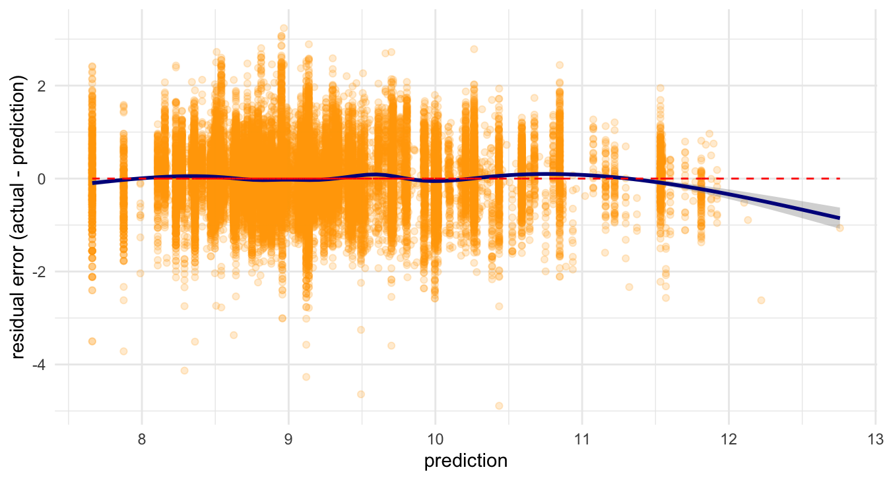

Lecture
Byeong-Hak Choe
February 4, 2022
This is an example of the lecture on estimating price elasticity via the model of linear regression with interaction terms using data for orange juice sales. The example is taken from the book, “Business Data Science: Combining Machine Learning and Economics to Optimize, Automate, and Accelerate Business Decisions,” and modified by Byeong-Hak Choe.
Price elasticity of demand
- Price elasticity of demand measures how sensitive the quantity demanded is to its price.
The concept of elasticity will play an important role in industries.
- Marketers need to understand how consumers are sensitive to fluctuations in price.
Loading R packages and orange juice data
library(tidyverse) # ggplot and more
theme_set(theme_minimal()) # minimal theme for ggplot
library(skimr) # a better summary of data
library(stargazer) # regression tables
library(moderndive) # geom_parallel_slopes()
oj <- read.table(
'https://bcecon.github.io/dominick_oj.csv',
sep = ',',
header = TRUE,
stringsAsFactor = TRUE
)
- We will use weekly sales data for orange juice (OJ) from Dominick’s grocery stores in the 1990s.
Descriptive statistics
OJ data
head(oj)## sales price brand feat
## 1 8256 3.87 tropicana 0
## 2 6144 3.87 tropicana 0
## 3 3840 3.87 tropicana 0
## 4 8000 3.87 tropicana 0
## 5 8896 3.87 tropicana 0
## 6 7168 3.87 tropicana 0levels(oj$brand)## [1] "dominicks" "minute.maid" "tropicana"Descriptive statistics
knitr::kable(skimmed_chr, "simple") # from skimr::skim()| Variable | n_missing | n_Categories | Counts |
|---|---|---|---|
| brand | 0 | 3 | dominicks: 9649, minute.maid: 9649, tropicana: 9649 |
knitr::kable(skimmed_numeric, "simple") # from skimr::skim()| Variable | n_missing | Mean | SD | Min | Q1 | Median | Q3 | Max | Hist |
|---|---|---|---|---|---|---|---|---|---|
| sales | 0 | 17312.21 | 27477.66 | 64.00 | 4864.00 | 8384.00 | 17408.00 | 716416.00 | ▇▁▁▁▁ |
| price | 0 | 2.28 | 0.65 | 0.52 | 1.79 | 2.17 | 2.73 | 3.87 | ▁▆▇▅▂ |
| feat | 0 | 0.24 | 0.43 | 0.00 | 0.00 | 0.00 | 0.00 | 1.00 | ▇▁▁▁▂ |
Visualizing OJ data
Distribution of OJ prices
- It is better to use a logarithmic scale when percent change matters.
ggplot(data = oj) +
geom_boxplot( aes( y = log(price), color = brand )) +
theme(axis.text.x = element_blank(), axis.ticks = element_blank())
Distribution of OJ sales
ggplot(data = oj) +
geom_boxplot( aes( y = log(sales), color = brand )) +
theme(axis.text.x = element_blank(), axis.ticks = element_blank())
Supply and demand for OJ
ggplot(data = oj, aes( x = log(price), y = log(sales),
color = brand )) +
geom_point( alpha = .25 ) 
Regression models
Regression model with brand dummies
- The regression model for price elasticity of OJ demand can be written as:
- Here \(\alpha_{\texttt{brand}}\) is shorthand for a separate indicator for each OJ brand:
- Here \(\beta\) measures the price elasticity of OJ demand:
Run the model
reg_oj1 <- lm(log(sales) ~ log(price) + brand,
data=oj)
stargazer(reg_oj1, type = "html", omit = c("Constant"))Run the model
| Dependent variable: | |
| log(sales) | |
| log(price) | -3.139*** |
| (0.023) | |
| brandminute.maid | 0.870*** |
| (0.013) | |
| brandtropicana | 1.530*** |
| (0.016) | |
| Observations | 28,947 |
| R2 | 0.394 |
| Adjusted R2 | 0.394 |
| Residual Std. Error | 0.794 (df = 28943) |
| F Statistic | 6,275.074*** (df = 3; 28943) |
| Note: | p<0.1; p<0.05; p<0.01 |
Regression lines
ggplot(data = oj, aes(x = log(price), y = log(sales),
color = brand )) +
geom_point(size = .75, alpha = 0.25) +
geom_parallel_slopes()
Regerssion model with interaction terms
- How does consumer price sensitivity change across brands?
- The new regression model can be written as:
- Here \(\beta_{\texttt{brand}}\) is shorthand for the brand-specific price elasticity:
Run the model
reg_oj2 <- lm(log(sales) ~ log(price)*brand,
data=oj)
stargazer(reg_oj1, reg_oj2, type = "html", omit = c("Constant"))Result
| Dependent variable: | ||
| log(sales) | ||
| (1) | (2) | |
| log(price) | -3.139*** | -3.378*** |
| (0.023) | (0.036) | |
| brandminute.maid | 0.870*** | 0.888*** |
| (0.013) | (0.042) | |
| brandtropicana | 1.530*** | 0.962*** |
| (0.016) | (0.046) | |
| log(price):brandminute.maid | 0.057 | |
| (0.057) | ||
| log(price):brandtropicana | 0.666*** | |
| (0.054) | ||
| Observations | 28,947 | 28,947 |
| R2 | 0.394 | 0.398 |
| Adjusted R2 | 0.394 | 0.398 |
| Residual Std. Error | 0.794 (df = 28943) | 0.791 (df = 28941) |
| F Statistic | 6,275.074*** (df = 3; 28943) | 3,823.404*** (df = 5; 28941) |
| Note: | p<0.1; p<0.05; p<0.01 | |
Regression lines
ggplot(data = oj, aes(x = log(price), y = log(sales),
color = brand )) +
geom_point(size = .75, alpha = 0.25) +
geom_smooth(method = lm, se=FALSE)
Advertisement effect
How does consumer price sensitivity change with advertisement?
- In a brand-specific manner?
- The new regression model can be written as:
- Here \(\beta_{\texttt{brand}}\) measures the brand-feat-specific price elasticity:
Run the model
reg_oj3 <- lm(log(sales) ~ log(price)*brand*feat,
data=oj)
stargazer(reg_oj1, reg_oj2, reg_oj3, type = "html", omit = c("Constant"))Result
| Dependent variable: | |||
| log(sales) | |||
| (1) | (2) | (3) | |
| log(price) | -3.139*** | -3.378*** | -2.774*** |
| (0.023) | (0.036) | (0.039) | |
| brandminute.maid | 0.870*** | 0.888*** | 0.047 |
| (0.013) | (0.042) | (0.047) | |
| brandtropicana | 1.530*** | 0.962*** | 0.708*** |
| (0.016) | (0.046) | (0.051) | |
| feat | 1.094*** | ||
| (0.038) | |||
| log(price):brandminute.maid | 0.057 | 0.783*** | |
| (0.057) | (0.061) | ||
| log(price):brandtropicana | 0.666*** | 0.736*** | |
| (0.054) | (0.057) | ||
| log(price):feat | -0.471*** | ||
| (0.074) | |||
| brandminute.maid:feat | 1.173*** | ||
| (0.082) | |||
| brandtropicana:feat | 0.785*** | ||
| (0.099) | |||
| log(price):brandminute.maid:feat | -1.109*** | ||
| (0.122) | |||
| log(price):brandtropicana:feat | -0.986*** | ||
| (0.124) | |||
| Observations | 28,947 | 28,947 | 28,947 |
| R2 | 0.394 | 0.398 | 0.535 |
| Adjusted R2 | 0.394 | 0.398 | 0.535 |
| Residual Std. Error | 0.794 (df = 28943) | 0.791 (df = 28941) | 0.695 (df = 28935) |
| F Statistic | 6,275.074*** (df = 3; 28943) | 3,823.404*** (df = 5; 28941) | 3,031.232*** (df = 11; 28935) |
| Note: | p<0.1; p<0.05; p<0.01 | ||
Regression lines
ggplot(data = oj, aes(x = log(price), y = log(sales), color = brand )) +
geom_point(size = .75, alpha = 0.25) +
geom_smooth(method=lm) +
facet_grid( . ~ feat, labeller = as_labeller(feat_names))
Price elasticities of OJ
| dominicks | minute.maid | tropicana | |
|---|---|---|---|
| Model 1 | -3.1 | -3.1 | -3.1 |
| Model 2 | -3.4 | -3.3 | -2.7 |
| Model 3 w/ no ad | -2.8 | -2.0 | -2.0 |
| Model 3 w/ ad | -3.2 | -3.6 | -3.5 |
Which model is better?
Which model is more realistic?
Why does being featured always lead to more price sensitivity?
The relationship between ad and brand
ggplot(data = salestable) +
geom_bar(mapping = aes(x = factor(feat), y = sales_prop,
fill = brand), stat = "identity") +
xlab("feat") + ylab("proportion of sales") +
scale_x_discrete(breaks=c(0, 1), labels=c("no ad", "ad"))
Residual plot and model fit
Which model is better?
On average, are the predictions correct?
Are there systematic errors in prediction?
Residual plot for model 1
# Residual plot 1
ggplot(data = oj, aes(x = predLogSales1, y = log(sales) - predLogSales1 )) +
geom_point(alpha = 0.2, color = "orange") + geom_smooth(color = "darkblue") +
geom_line(aes(x = predLogSales1, y = 0), color = "red", linetype = 2) +
xlab("prediction") + ylab("residual error (actual - prediction)")
Residual plot for model 2
# Residual plot 2
ggplot(data = oj, aes(x = predLogSales2, y = log(sales) - predLogSales2 )) +
geom_point(alpha = 0.2, color = "orange") + geom_smooth(color = "darkblue") +
geom_line(aes(x = predLogSales2, y = 0), color = "red", linetype = 2) +
xlab("prediction") + ylab("residual error (actual - prediction)")Residual plot for model 3
# Residual plot 3
ggplot(data = oj, aes(x = predLogSales3, y = log(sales) - predLogSales3 )) +
geom_point(alpha = 0.2, color = "orange") + geom_smooth(color = "darkblue") +
geom_line(aes(x = predLogSales3, y = 0), color = "red", linetype = 2) +
xlab("prediction") + ylab("residual error (actual - prediction)")
Copyright © 2022 Byeong-Hak Choe. All rights reserved.